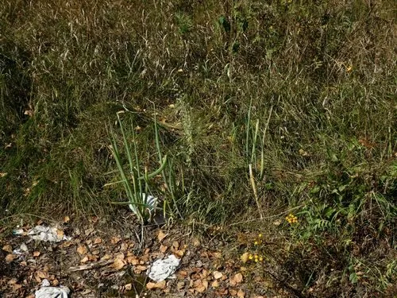

农作物与经济植物 · 植物界
葱 Allium fistulosum

石蒜科多年生草本，叶中空管状、假茎洁白，是中式烹饪最基础的调味蔬菜之一，原产中国西部与中亚。
- 分类
- 门被子植物门纲木兰纲目天门冬目科石蒜科属葱属
- 栖息环境
- 冷凉地区的菜园与农田，喜光、耐寒、忌积水
- 地理分布
- 原产中国西部与中亚，中国各地普遍栽培，日本、朝鲜半岛也有种植
- 保护级别
- 暂无评估；栽培作物
物种志
葱为石蒜科葱属多年生草本，常作一二年生栽培，株高 0.5–1 米。叶圆筒状中空，表面有白粉，深绿色；叶鞘层层抱合形成白色假茎。花葶中空，顶端着生球形伞形花序，花白色，密集如绒球，花期 5–7 月；蒴果开裂，种子黑色。
葱原产中国西部与中亚山地，是中国栽培历史最久的蔬菜之一。按假茎高度分为大葱与小葱（香葱），前者北方栽培、假茎可长达 50 厘米，后者南方四季栽培、以嫩叶调味。葱含硫化物，切碎后辛辣冲鼻，炝锅时能去腥增香，是中式爆炒的基础。栽培喜冷凉、阳光充足，适宜疏松肥沃土壤，春秋播种或分株，大葱需多次培土软化假茎。
形态与习性
- 原产地中国西部与中亚山地
- 株高0.5–1 米，叶管状中空
- 类型大葱假茎可长 50 厘米，小葱以嫩叶调味
- 用途炝锅去腥、凉拌蘸酱，葱白葱叶皆可食
- 栽培喜冷凉向阳，春秋播种，大葱需培土软化
- 采收小葱播后 40–60 天可收，大葱秋末收获
趣味知识
- 切葱时辣眼流泪，是细胞破裂后硫化物挥发刺激眼睛所致，冷藏后切可减轻。
- 大葱与小葱其实是同一种，只是品种与栽培方式不同，假茎高度差异很大。
- 葱的花序是白色绒球状，开花后结出黑色小种子。
- 北方大葱需多次培土，把叶鞘埋入土中软化，才能长成又长又白的葱白。